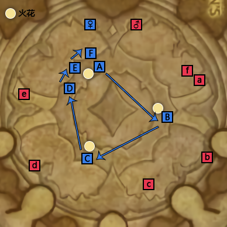

BOSS是个流程性BOSS，流程到几乎所有时间轴都是固定的；
1. 猛烈爆发约1分45秒一次，第一次时间为开BOSS后1分40秒；
2. 强能火花约1分45秒一次，第一次时间为开BOSS后20秒；
3. 强能火花击杀间隔必须大于6秒。
1. 狂热冲锋可以使用无敌类技能单吃，且为冰霜伤害，理论上DZ斗篷，DK反魔法罩可单吃；其他职业需要有60%以上减伤才可以单吃，比如个人减伤+翅膀、压制等等；
2. 狂热冲锋约40秒一次，第一次时间为开BOSS后30秒；
3. 冲锋沙包机制（NGA上看到的）：全团其他远程在不超过BOSS10到12码的情况下输出治疗。安排一个猎人在远处。即BOSS只会冲锋这个猎人，并且猎人可以通过冲锋读条到2/3时候假死规避场面出水的问题；
4. 狂热爆发（集合圈）约1分40秒一次，第一次时间为开BOSS后50秒。
1. 先打男人，减少女人猛烈爆技能对近战DPS的影响；
2. 男人血量达30%时，转火女人，由多线职业对男人继续进行输出；
3. 由于法令的顺序是固定，依次为列阵、重复行动、出列、缓刑、服从或受苦，T的走位将顺时针绕场地移动；
4. BOSS7分30秒狂暴，法令将重复2.5次，第五次火花出现时进入RUSH阶段；
5. 如果使用沙包，可以极大的减少治疗压力，降低BOSS战难度，所以不能单吃的职业被点冲锋以后，可以选择性战（fang）复（sheng）。
1. 整场战斗主要是看T的走位，沙包和被冲锋的人需要在场地边缘，其他人围绕BOSS10码范围站即可；
2. 每出现一次法令，BOSS起手拉在A点，后续依次按A→B→C→D→E→F→B→...带位；
3. 因为。

生命值将至1%时，施法者将免疫所有伤害并开始施放孤注一掷，恢复施法者100%最大生命值。
击败帕什玛和希里瓦兹可打断施法。
说明：两个BOSS死亡时间差不超过10秒，孤注一掷施法时长10秒。
当议会成员之间的距离少于21码时，他们所受到的伤害都降低99%。
说明：就是T要把两个BOSS拉开。
整场战斗中，艾萨拉女王会颁布多种法令，必须小心应对。在更高的难度中，颁布法令的间隔时间会减少。
说明：史诗难度下法令间隔时间变短，每30秒换一次，第一次出现时间为开BOSS30秒，法令类型还是5个，但是多出来了一种效果：影响范围。
法令要求玩家必须站到法庭的阵型中，每10秒一次，5秒之后，每个阵型都会进行排列，造成172,974点奥术伤害。阵型中每有一个位置缺少玩家，就会提高造成的奥术伤害。
说明：列阵时，BOSS场地中央会出紫色冒尖的圈圈，必须有人站在里面，保证那个尖尖看不到，圈消失之前不允许出圈。列阵的圈会连续出3次，所以要踩3次圈。
连续两次使用同一个法术或技能会激怒艾萨拉女王，使目标平静并沉默2秒。
说明：最简单的法令，不要连续用同样的技能就可以，这个DEBUFF持续30秒。
强迫所有目标远离其他玩家。如果该法令被打破，出列将对该目标及其附近的所有玩家造成43,244点冰霜伤害。
说明：就是不要和别人离太近，保持距离。中了出列的人会有很明显的法术效果，身上会有一圈风，如果有人靠近会有很明显膨胀爆炸效果，这个DEBUFF持续30秒。
站立不动时会在玩家身体中叠加。移动时，缓刑会根据叠加的层数造成自然伤害并重置计数。持续时间结束时，缓刑造成法令中剩余的伤害。
说明：简单的说就是类似庄园SHE的第二个女巫的光环，需要时不时动一下，推荐3-4层一动，这个DEBUFF持续30秒；
手册上没有写具体伤害，WCL上可以看到大概每层是5万+点伤害，每多1层大概会长2.5万左右；
上面的伤害看着挺高的，但是他受一切减伤技能影响，盾、特质、甚至自身抗性影响，所以实际伤害第一层大概是4W+，每多一层多1W+；
用个简单数值说明这个技能，假设1层DOT是100点伤害，每层多加20点伤害。
1. 叠加说明：法令开始后，每隔2秒会叠加1层DOT，最少1层，最高叠多少层没试过。
2. 扣血说明：移动前，身上几层DOT，就扣层数×100点血，即1层扣100，2层扣120，5层扣200。
3. 缓刑结束：缓刑持续时间结束后，会一次性造成当前层数移动后的伤害。
所有玩家都被标记。任何一名玩家受到伤害时，会被施加承受折磨，吸收受到的所有治疗效果，持续5秒。
说明：简单来说，就是受一下伤害后，接下来5秒不能被治疗。这里主要是要看好T。
每个法令会围绕自己生成光环，每1秒造成77,872点暗影伤害，并增强艾萨拉女王法令的效果，提高造成的伤害或延长效果持续时间。
说明：简单来说，跑法令的时候场地上会多出来一个很大的圈，圈的位置是固定的，别踩进去就是了。
每当近战攻击连续攻击同一目标时，希里瓦兹的攻击速度提高8%。此效果可叠加。
说明：换T，建议在男人狂热冲锋和女人猛烈爆发的时候进行换T。
希里瓦兹随机标记了一位玩家。6秒后，他会冲向该玩家，造成864,871点冰霜伤害，由目标8码范围内的所有玩家分摊，并将它们击退。狂热冲锋会在目的地留下一片力量决裂
说明：集合分摊，或者无敌技能单吃。
在施法者的位置打开一道裂隙，每2秒对所有站在裂隙内的玩家造成138,379点物理伤害。
说明：别踩就是，裂隙在场上一直内存子啊，所以狂热冲锋一定要放好位置。可以选择猎人沙包的方式规避出裂隙。
希里瓦兹令一连串的喷泉喷发，每2秒对所有玩家造成207,569点冰霜伤害，持续10秒。靠近希里瓦兹的玩家不会受到伤害。
说明：男人BOSS脚底下集合就是。
将施法者的意志强加于目标，使得近战攻击施加帕什玛之触。此效果可叠加。当叠加到10层时，帕什玛之触将变成疯狂热诚，目标的心灵会被操纵。
说明：T身上的这个DOT叠到10层前换T，建议在男人狂热冲锋和女人猛烈爆发的时候进行换T。
随机标记数名玩家。持续时间结束后，被标记的玩家会爆炸，对5码内的所有玩家造成172,297点自然伤害。
说明：被点名的出人群，炸了以后再回来。
震击目标，造成51,892点自然伤害。
说明：奶妈加血。
施法者向所有方向释放毁灭性的电流波，对素有敌人造成415,138点自然伤害。离施法者距离越远受到的伤害越低。
说明：远离BOSS技能范围。
召唤一串充电球体，持续时间结束后球体会释放强能火花，对所有敌人造成172,974点自然伤害，并使其受到的强能火花伤害提高100%，持续5秒。
说明：BOSS每次召唤3个4.11m血量的火花，火花血量为0的时候会爆炸，造成伤害，并会给所有人上一个DOT，使其受到的下一次火花爆炸伤害翻倍。
简单来说就是3个火花击杀的时间差需要大于6秒。